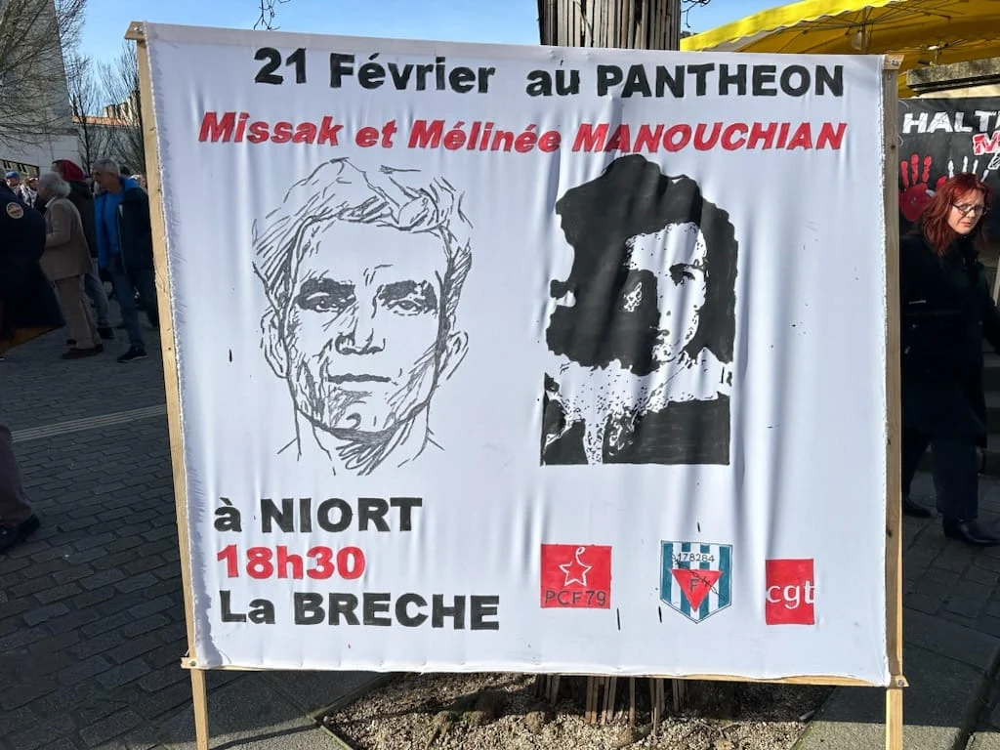

Appel de la fédération
À Niort, l’appel à l’hommage du 21 février à Missak et Mélinée Manouchian
Date indiquée par Facebook · 20 février 2024
Repères éditoriaux
Avec la CGT 79 et le soutien annoncé des associations, nous avons donné rendez-vous place de la Brèche à 18 h 30. Le reportage du lendemain documente l’hommage.
Texte conservé avec la publication
Le 21 février 2024, Missak et Mélinée Manouchian entreront au Panthéon.
Avec la CGT 79, et avec le soutien de l’ADIRP 79 (Association Déportés Internés Résistants Patriotes), le Parti Communiste Français des Deux-Sèvres rendra un hommage à ces hautes figures de notre histoire et donne rendez-vous à toutes les habitantes et à tous les habitants du Département pour commémorer dignement ces camarades morts pour la France.
Rendez-vous mercredi 21 février à 18H30 place de la Brèche. Venez avec une bougie pour symboliser plus largement toutes celles et tous ceux qui sont tombé.es face au nazisme, face à l’extrême droite française, face au gouvernement de Vichy.

Sources
Archive rouge · export Facebook · AR-0002-FB-01471
À lire aussi · À Niort, nous avons rendu hommage à Missak et Mélinée Manouchian et à leurs camarades